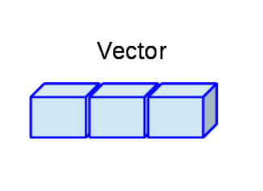
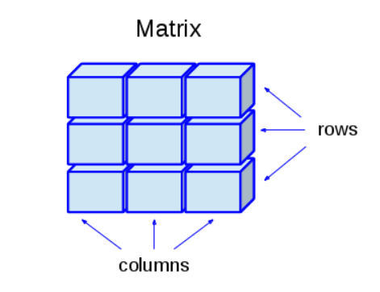
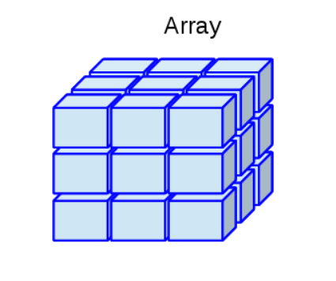
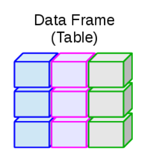
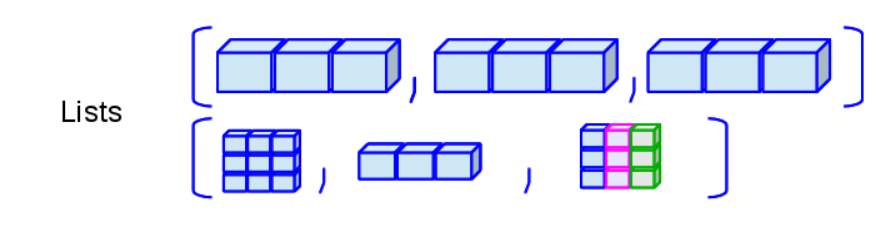

minivec <- 25
is.vector(minivec)[1] TRUElength(minivec)[1] 1Los vectores son objetos que llevan una colección de uno o más datos del mismo tipo. El tipo del vector es igual al tipo de datos que contiene y solo puede contener datos del mismo tipo. Los vectores también tienen un largo, es decir el número de datos que contiene.

En esencia un solo número o carácter es un vector de largo 1
minivec <- 25
is.vector(minivec)[1] TRUElength(minivec)[1] 1Para generar vectores de mayor tamaño debemos usar la función de c()o concatenar.
# Vector numerico
vec1 <- c(1,223,4,5)
length(vec1)[1] 4class(vec1)[1] "numeric"# Vector de caracteres
vec2 <- c("a", "b", "c", "d")
class(vec2)[1] "character"# Vector lógico
vec3 <- c(TRUE, FALSE, TRUE, FALSE)
class(vec2)[1] "character"# Si admite NA
vec4 <- c(2.5, 30, 45.5, NA)
class(vec4)[1] "numeric"Podemos incluso concatenar objetos que contengan vectores de la misma clase
vec5 <- c(27,28,29,30)
(vec6 <- c(vec1, vec5))[1] 1 223 4 5 27 28 29 30¿Que sucede cuando creamos un vector con dos tipos de datos?
vec7 <- c(1,2,3, "4")
class(vec7)[1] "character"
Podemos crear vectores mediante función de secuencia. Cuando es una secuencia sencilla podemos usar el comando :. Si necesitamos secuencias más específicas o con ciertas características, entonces podemos usar la función seq. Ésta función tiene varios argumentos, from es el número de inicio, el to el número final, length.out sirve para controlar el largo del vector y mediante by podemos especificar el intervalo de la secuencia.
(vec_seq1 <- 1:10) [1] 1 2 3 4 5 6 7 8 9 10(vec_seq2 <- seq(from=1, # Valor de inicio
to= 6,
length.out= 10)) # Valor final [1] 1.000000 1.555556 2.111111 2.666667 3.222222 3.777778 4.333333 4.888889
[9] 5.444444 6.000000(vec_seq3 <- seq(from= 1,
to= 10,
by= 0.5)) [1] 1.0 1.5 2.0 2.5 3.0 3.5 4.0 4.5 5.0 5.5 6.0 6.5 7.0 7.5 8.0
[16] 8.5 9.0 9.5 10.0rep permite repetir valores un determinado número de veces. El argumento de times nos permite especificar el número de veces que un valor o un vector se va a repetir. Cuando especificamos each podemos controlar el número de veces que se repite cada valor dentro del vector.
(vec_rep1 <- rep(x=25,
times= 5))[1] 25 25 25 25 25(vec_rep2 <- rep(vec_rep1,
times=3)) [1] 25 25 25 25 25 25 25 25 25 25 25 25 25 25 25(vec_rep3 <- rep(vec2,
each=3)) [1] "a" "a" "a" "b" "b" "b" "c" "c" "c" "d" "d" "d"Los factores son un caso especial de los caracteres y tienen la peculiaridad de que están compuestos por niveles. En otras palabras los factores pueden asumir un número limitado de valores posibles conocidos o niveles.
Por ejemplo, imaginemos un experimento donde se aplica el tratamiento de sombra a unas plantas en crecimiento. En este caso el tratamiento de sombra es un factor y puede tomar “si” cuando tiene sombra o “no” cuando no se aplicó sombra. Para crear un factor usamos la función factor
somb <- c(rep("si", 5), rep("no", 5))
fact_somb <- factor(somb)
class(somb)[1] "character"class(fact_somb)[1] "factor"Es importante especificar los factores porque muchos funciones y análisis estadísticos requieren de usar objetos de tipo factor.
Podemos crear vectores basados en números al azar basados en una distribución. Por ejemplo, la más común es la distribución normal y se crea mediante rnorm. Ésta función hace parte de una familia de funciones basadas en distribuciones (ver help de rnorm) y básicamente genera números aleatorios basados en una distribución normal.
# en este ejemplo vamos a crear un vector de 100 valores
vec_norm <- rnorm(100,
mean = 0,
sd=1)
is.vector(vec_norm)[1] TRUEEn los vectores podemos seleccionar valores con [] , el número que pongamos dentro será la posición del valor que seleccionaremos
vec_rep3[1] # el primer valor[1] "a"vec_rep2[5] # el quinto valor[1] 25Podemos seleccionar varios valores utilizando el comando de concatenar
vec_seq3[c(1,5,9)] # Seleccionamos el primer, el quinto y el 9 valor[1] 1 3 5Las operaciones aritméticas y lógicas también funcionan con vectores. Pero en este caso obtenemos un resultado por cada elemento
(vec_sum <- vec_seq3 + 5) [1] 6.0 6.5 7.0 7.5 8.0 8.5 9.0 9.5 10.0 10.5 11.0 11.5 12.0 12.5 13.0
[16] 13.5 14.0 14.5 15.0vec_seq3 > 5 [1] FALSE FALSE FALSE FALSE FALSE FALSE FALSE FALSE FALSE TRUE TRUE TRUE
[13] TRUE TRUE TRUE TRUE TRUE TRUE TRUELas matrices son vectores multi-dimensionales y al igual que los vectores solo pueden contener un tipo de datos. Las matrices tienen dos dimensiones “alto” dado por el número de filas y “largo” por el número de columnas.

Podemos crear una matriz a partir de un vector, especificando las dimensiones de columnas por medio de la función matrix. Los argumentos de nrow y ncol ayudan a definir el número de filas y columnas respectivamente.
(x1 <- matrix(1:20)) [,1]
[1,] 1
[2,] 2
[3,] 3
[4,] 4
[5,] 5
[6,] 6
[7,] 7
[8,] 8
[9,] 9
[10,] 10
[11,] 11
[12,] 12
[13,] 13
[14,] 14
[15,] 15
[16,] 16
[17,] 17
[18,] 18
[19,] 19
[20,] 20# Podemos especificar las columnas y las filas
matrix(1:20, nrow = 5, ncol = 4) [,1] [,2] [,3] [,4]
[1,] 1 6 11 16
[2,] 2 7 12 17
[3,] 3 8 13 18
[4,] 4 9 14 19
[5,] 5 10 15 20matrix(1:20, nrow = 10, ncol = 10) [,1] [,2] [,3] [,4] [,5] [,6] [,7] [,8] [,9] [,10]
[1,] 1 11 1 11 1 11 1 11 1 11
[2,] 2 12 2 12 2 12 2 12 2 12
[3,] 3 13 3 13 3 13 3 13 3 13
[4,] 4 14 4 14 4 14 4 14 4 14
[5,] 5 15 5 15 5 15 5 15 5 15
[6,] 6 16 6 16 6 16 6 16 6 16
[7,] 7 17 7 17 7 17 7 17 7 17
[8,] 8 18 8 18 8 18 8 18 8 18
[9,] 9 19 9 19 9 19 9 19 9 19
[10,] 10 20 10 20 10 20 10 20 10 20matrix(1:20, nrow = 4, ncol = 3)Warning in matrix(1:20, nrow = 4, ncol = 3): la longitud de los datos [20] no es
un submúltiplo o múltiplo del número de columnas [3] en la matriz [,1] [,2] [,3]
[1,] 1 5 9
[2,] 2 6 10
[3,] 3 7 11
[4,] 4 8 12A veces es más intuitivo unir dos o más vectores previamente existentes, por lo que en estos casos podemos combinarlos por filas rbind o por columnas cbind .
v1 <- 1:4
v2 <- 9:12
v3 <- 13:16
(m1 <- rbind(v1, v2, v3)) [,1] [,2] [,3] [,4]
v1 1 2 3 4
v2 9 10 11 12
v3 13 14 15 16(m3 <- cbind(v1, v2, v3)) v1 v2 v3
[1,] 1 9 13
[2,] 2 10 14
[3,] 3 11 15
[4,] 4 12 16class(m1)[1] "matrix" "array" v4 <- 20:28
m2 <- rbind(v1,v4)Warning in rbind(v1, v4): number of columns of result is not a multiple of
vector length (arg 1)Se pueden combinar vectores de distinto tipo, pero el de tipo carácter siempre transformará al numérico. Entonces, cuidado con lo que combinan.
v5 <- c("1", "2", "3", "4")
(m4 <- cbind(v1, v5)) v1 v5
[1,] "1" "1"
[2,] "2" "2"
[3,] "3" "3"
[4,] "4" "4"str(m4) chr [1:4, 1:2] "1" "2" "3" "4" "1" "2" "3" "4"
- attr(*, "dimnames")=List of 2
..$ : NULL
..$ : chr [1:2] "v1" "v5"dim(m4)[1] 4 2class(m4)[1] "matrix" "array" Se pueden usar operadores aritméticos en matrices de tipo numérico.
m2+1 [,1] [,2] [,3] [,4] [,5] [,6] [,7] [,8] [,9]
v1 2 3 4 5 2 3 4 5 2
v4 21 22 23 24 25 26 27 28 29# m4+1Podemos hacer uso de la función t() para transponer una matriz
# Podemos transponer una matriz
m3t <- t(m3)Igual que en los vectores podemos usar[] para seleccionar valores. La grán diferencia es que como las matrices son de 2 dimensiones, debemos especificar ambas en los paréntesis y separarlos por una coma: [filas , columnas]. Cuando seleccionamos más de una fila o columna podemos usar c para concatenar el vector de selección. Cuando ponemos un signo de “menos” (-) dentro de los paréntesis de selección, vamos a eliminar dicha columna o fila.
# Vamos a seleccionar la fila 1 y 3 de m3
m3[c(1,3),] v1 v2 v3
[1,] 1 9 13
[2,] 3 11 15#Tabién podemos seleccionar valores de la diagonal por medio de diag
diag(m3)[1] 1 10 15diag(m3t)[1] 1 10 15# Eliminar la fila 1 y seleccionar la columna 2
m3[-1,2][1] 10 11 12# Eliminar las filas 1 y 4, y seleccionar las columnas 1 y 3
m3[c(-1,-4), c(1,3)] v1 v3
[1,] 2 14
[2,] 3 15Cunado usamos los selectores al lado izquierdo de la definición de objeto, podemos reemplazar los valores, por los que estamos definiendo.
# Podemos reemplazar valores de las matrices
# Reemplazar la segunda fila por 100, 200 y 300
m3[2,] <- c(100,200, 300)
m3 v1 v2 v3
[1,] 1 9 13
[2,] 100 200 300
[3,] 3 11 15
[4,] 4 12 16# Reemplazar fila 4 y 3 y columna 2 por 1000
m3[c(4,3),2] <- 1000
m3 v1 v2 v3
[1,] 1 9 13
[2,] 100 200 300
[3,] 3 1000 15
[4,] 4 1000 16# Reemplaza 1 y 3 fila y 1 y 3 fila por 500
m3[c(1,3), c(1,3)] <- 500
m3 v1 v2 v3
[1,] 500 9 500
[2,] 100 200 300
[3,] 500 1000 500
[4,] 4 1000 16# Reemplaza la tercea columna por la 1 columna más 3
m3[,3] <- m3[,1]+3
m3 v1 v2 v3
[1,] 500 9 503
[2,] 100 200 103
[3,] 500 1000 503
[4,] 4 1000 7
El array es un tipo matriz, pero con más de dos dimensiones 😵🤯. Las array, al igual que las matrices, solo pueden ser formadas por objetos del mismo tipo. Podemos usar la función array y definir filas, columnas y tercera dimensión
AR1 <- array(1:30, dim = c(3,4,2))
AR1, , 1
[,1] [,2] [,3] [,4]
[1,] 1 4 7 10
[2,] 2 5 8 11
[3,] 3 6 9 12
, , 2
[,1] [,2] [,3] [,4]
[1,] 13 16 19 22
[2,] 14 17 20 23
[3,] 15 18 21 24class(AR1)[1] "array"dim(AR1)[1] 3 4 2str(AR1) int [1:3, 1:4, 1:2] 1 2 3 4 5 6 7 8 9 10 ...# Seleccionar la celda con el valor de 13
x <- AR1[,,2]
Los data frames al igual que las matrices son objetos de dos dimensiones, pero pueden tener diferentes tipos de datos. Ésta característica los convierte en uno de los objetos más usados para muchos tipos de análisis, por su versatilidad. En general se puede entender las filas de un dataframe como observaciones, casos o individuos y las columnas como variables.
En los data frames cada columna puede ser de distinto tipo pero todas tienen que ser del mismo largo
col1 <- 1:5
col2 <- c("Z", "W", "L", "M", "R")
col3 <- c(TRUE, FALSE, FALSE, TRUE, FALSE)
df1 <- data.frame(numeros= col1,
letras= col2,
logico= col3)Podemos usar la función view para visualizar el dataframe
View(df1)Podemos extraer diferentes características de los data frames
# las dimensiones
dim(df1)[1] 5 3# Los nombres de las columnas
names(df1)[1] "numeros" "letras" "logico" # La clase
class(df1)[1] "data.frame"Podemos transformar una matriz a un data frame o un data frame con solo números a una matriz.
df2 <- as.data.frame(m3)
df2 v1 v2 v3
1 500 9 503
2 100 200 103
3 500 1000 503
4 4 1000 7En los data frames también podemos seleccionar valores por medio de [] , incluyendo los nombres de las columnas
# Seleccionar primera columna
df1[,1][1] 1 2 3 4 5# Seleccionar primera fila
df1[1,] numeros letras logico
1 1 Z TRUE# Seleccionar por nombres
df1[c("letras", "logico")] letras logico
1 Z TRUE
2 W FALSE
3 L FALSE
4 M TRUE
5 R FALSEOtra manera muy común de seleccionar columnas en un data frame es por medio de $ . El operador de peso selecciona el objeto conservando su clase original, es decir el data frame
(letras2 <- df1$letras)[1] "Z" "W" "L" "M" "R"
Las listas como los vectores son de una sola dimensión. Sin embargo, pueden tener diferentes tipos de valores e incluso de elementos. Una lista puede tener dentro un vector, una matriz, un data frame e incluso otra lista
v <- 1:10
df <- data.frame(num= 1:4, letra= letters[1:4])
lista <- list(vector=v, dataframe= df, Matriz= m3)
dim(lista)NULLlength(lista)[1] 3Podemos utilizar los selectores que ya vimos en las listas
# selección que resulta en lista
(v2 <- lista[1])$vector
[1] 1 2 3 4 5 6 7 8 9 10# Selección que termina en vector
(v3 <- lista[[1]]) [1] 1 2 3 4 5 6 7 8 9 10class(v3)[1] "integer"# Selección de dataframe
(df_list <- lista[[2]]) num letra
1 1 a
2 2 b
3 3 c
4 4 d# Selección termina en matriz
(mat <- lista$Matriz) v1 v2 v3
[1,] 500 9 503
[2,] 100 200 103
[3,] 500 1000 503
[4,] 4 1000 7